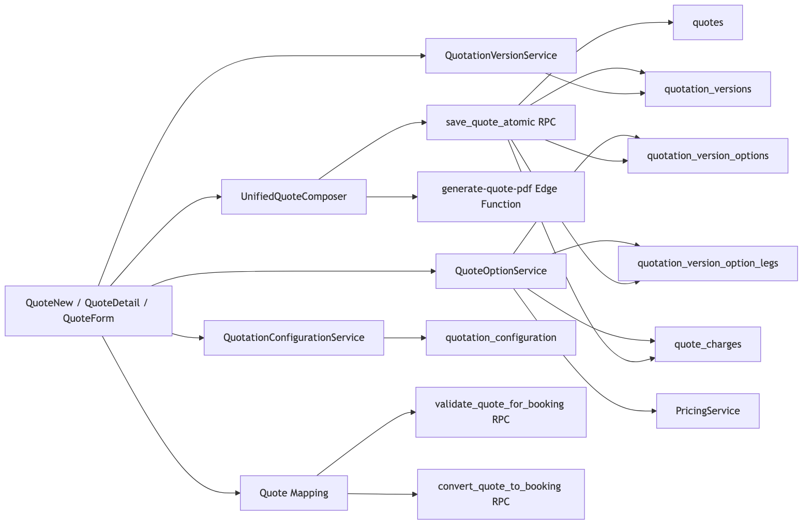
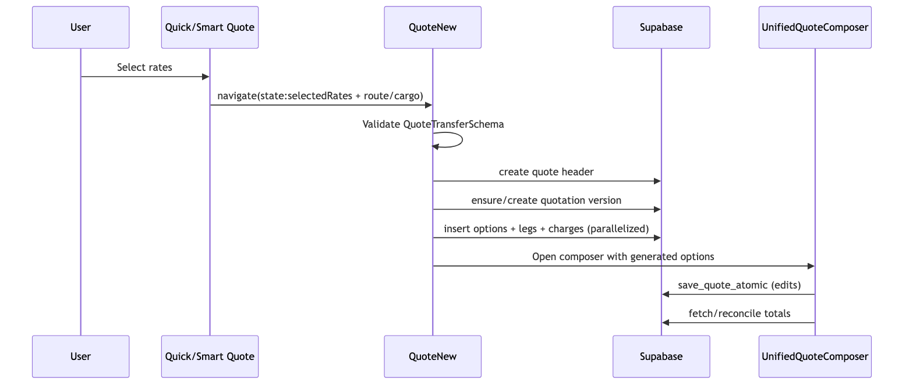
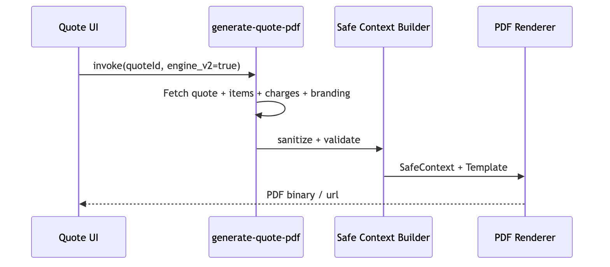
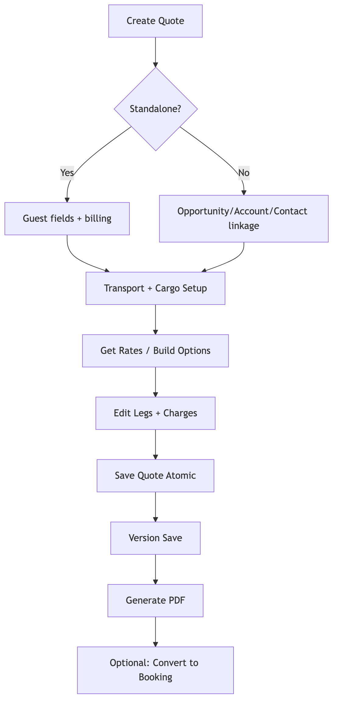
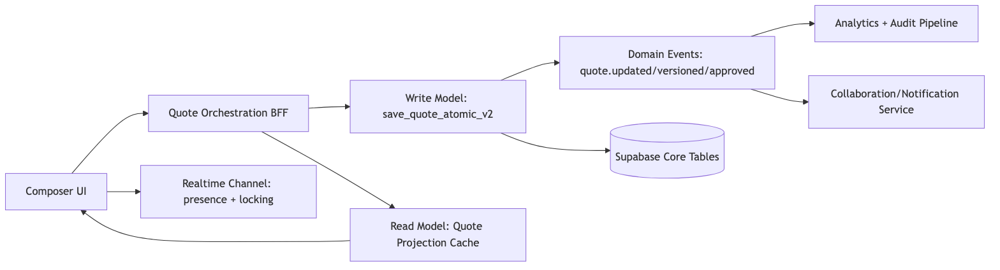
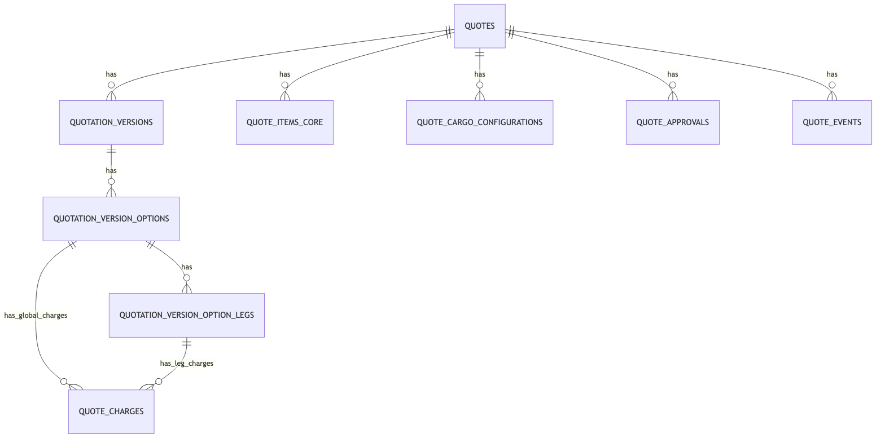
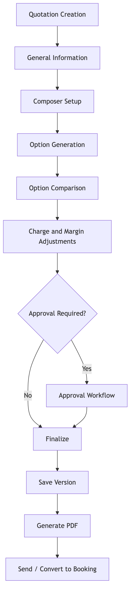

1.02026-04-07Vimal Bahuguna, Senior Solution ArchitectCodebase Audit + Existing Technical Artifact SynthesisQuotation and Quote Composer ecosystem (UI, APIs, services, schema, integrations, governance)This PRD is built from a systematic audit of the current Quotation implementation. It documents:
src/pages/dashboard/QuoteNew.tsxsrc/pages/dashboard/QuoteDetail.tsxsrc/pages/dashboard/Quotes.tsxsrc/pages/dashboard/QuotesImportExport.tsxsrc/pages/dashboard/QuoteTemplates.tsxsrc/pages/dashboard/QuoteBookingMapper.tsxsrc/components/sales/unified-composer/UnifiedQuoteComposer.tsxsrc/components/sales/unified-composer/FormZone.tsxsrc/components/sales/unified-composer/ResultsZone.tsxsrc/components/sales/unified-composer/FinalizeSection.tsxsrc/components/sales/unified-composer/schema.tssrc/components/sales/quote-form/*src/services/quotation/*src/services/QuoteOptionService.tssrc/services/pricing.service.tssrc/pages/api/v2/quotations/import.tssrc/pages/api/v2/quotations/export.tsdocs/api/quote-mapping-api.yamlsupabase/migrations/20251005170000_quotation_core.sqlsupabase/migrations/20251108115738_69577924-736f-40dd-9d24-0a104675c62e.sqlsupabase/migrations/20260122090000_enhance_quote_schema.sqlsupabase/migrations/20260201170001_enterprise_quote_architecture.sqlsupabase/migrations/20260215000000_quote_cargo_configurations.sqlsupabase/migrations/20260227000002_enhance_quotation_module.sqlsupabase/migrations/20260303120000_update_save_quote_atomic_locations.sqlsupabase/migrations/20260306180000_update_quote_templates_schema.sqlsrc/config/permissions.tsdocs/quote-data-pipeline.mddocs/quote-generation-workflow.mddocs/quick-quote-integration-spec.mddocs/technical_specs/quotation_engine_architecture.mdtests/e2e/quotation/quotation-e2e-review-and-traceability.mdquotes,
quotation_versions, quotation_version_options,
quotation_version_option_legs, quote_charges,
and cargo/item extensions.| Layer | Module | Responsibility | Key Dependencies | Integration Touchpoints |
|---|---|---|---|---|
| Route | QuoteNew |
New quote orchestration, quick/smart quote conversion, option generation | QuoteFormRefactored, UnifiedQuoteComposer,
QuoteOptionService patterns |
Supabase tables, RPC save_quote_atomic, rate payload
mapping |
| Route | QuoteDetail |
Version management, save/restore version, detail visualization | Version panels, option cards, comparison components | Edge functions save-quotation-version,
restore-quotation-version |
| Route | Quotes |
Quote list/search/filter actions | data hooks, table/list components | CRUD endpoints and direct data reads |
| Route | QuotesImportExport |
Batch import/export entry UI | API routes v2, permission checks | /api/v2/quotations/import,
/api/v2/quotations/export |
| Route | QuoteTemplates |
Template list/editor and quote creation from template | template components + auth context | quote_templates, quotes insert |
| Route | QuoteBookingMapper |
Quote-to-booking conversion workflow | QuoteSelectionGrid,
QuoteMappingPreview |
RPC validate_quote_for_booking,
convert_quote_to_booking |
| Component | UnifiedQuoteComposer |
Main composer shell (tabs/phases), save, calculate, generate PDF | FormZone, ResultsZone,
FinalizeSection, schema |
RPC save_quote_atomic, Edge
generate-quote-pdf |
| Component | QuoteFormRefactored |
Structured quote editor (header/logistics/cargo/financials) | QuoteHeader, QuoteLogistics,
QuoteLineItems, QuoteFinancials |
useQuoteRepository, scoped DB writes |
| Service | QuoteOptionService |
Option, leg, charge normalization and persistence | PricingService, mappers, charge matching utils |
quotation_version_options,
quotation_version_option_legs,
quote_charges |
| Service | QuotationVersionService |
Create/list/set active/restore logic | DB wrapper and version policies | quotation_versions,
quotes.current_version_id |
| Service | QuotationOptionCrudService |
Option-level delete/update wrappers | DB RPC abstraction | RPC delete_quote_option_safe |
| Service | QuotationConfigurationService |
Tenant-level composer defaults and smart mode controls | tenant context | quotation_configuration |
| Service | QuotationRankingService |
Option scoring and recommendation | scoring criteria and metadata | rank fields in quotation_version_options |
| Service | PricingService |
margin rules, financial calculations, realtime subscriptions | margin_rules, service_pricing_tiers,
services |
RPC calculate_service_price, client fallback |
| DB Core | quotes + related |
Header-level quote contract | contacts/accounts/service types/currency | CRUD and version linkage |
| DB Versioning | quotation_versions |
immutable-ish state progression and snapshots | quote FK, template snapshot | save/restore workflows |
| DB Options | quotation_version_options |
carrier options and ranking metadata | version FK + carrier/reference data | compare/rank/select flows |
| DB Legs | quotation_version_option_legs |
multimodal route legs and transit detail | ports/carrier/service type FKs | per-leg charge mapping and UI route breakdown |
| DB Charges | quote_charges |
buy/sell financial lines | bases/categories/currency/sides | final totals, reconciliation, margin |
| DB Cargo | quote_cargo_configurations |
structured cargo setup by transport mode | package and dimensional metadata | pricing, operational planning |
| DB Governance | quote_approval_rules, quote_approvals,
quote_pricing_logs, quote_events |
approvals + auditability | user/tenant context | compliance, enterprise controls |



QuoteNew Primary
Sections| Section | Purpose | User Interactions | Business Logic | Conditional Rendering | Performance Expectations |
|---|---|---|---|---|---|
| Initialization | Resolve navigation payload and startup data | enter page / convert flow | validates transfer payload, creates quote header/version | shows failure UI when tenant/version missing | initial load under 1s for standard form |
| Generation Progress | show conversion from selected rates | view progress and errors | parallel option insertion and timeout handling | visible only when selected rates exist | 4 options target ~1-3s |
| Composer Launch | route to detailed editing | edit options / legs / charges | binds generated data to composer state | appears once version/options exist | smooth transition without hard reload |
UnifiedQuoteComposer Sections| Section | Purpose | User Interactions | Business Logic | Conditional Rendering | Performance Requirements |
|---|---|---|---|---|---|
| General Information tab | CRM/guest context and core quote header | select opp/account/contact, standalone toggle | cross-field synchronization and validation | guest fields only in standalone | under 100ms field-response |
| FormZone | route and cargo intake | choose mode, origin/destination, cargo, attachments | mode-specific required fields and schema validation | air/ocean/rail-specific controls | autocomplete lookup <300ms perceived |
| ResultsZone | option review and editing | compare options, adjust charges/margins | ranking, charge aggregation, smart suggestions | only after rates/options available | list/grid rendering should stay <16ms/frame |
| FinalizeSection | save/version/pdf actions | save draft/final, generate pdf | payload normalization then save_quote_atomic |
enabled when form validity passes | save RPC robust retry and clear error taxonomy |
| Error handling surface | resilience to RPC/schema mismatches | user retries with guidance | maps backend error signatures to user-readable remediation | shown only on failure | no hard crash; recoverable fallback path |
QuoteFormRefactored Sections| Section | Purpose | User Interactions | Business Logic | Conditional Rendering | Performance Requirements |
|---|---|---|---|---|---|
QuoteHeader |
quote identity + CRM linkage | set title/status/dates and link entities | auto-populate account/contact from opportunity | standalone guest block toggled | reactive updates with no full re-render |
QuoteLogistics |
service/carrier/route configuration | select service type/level/carrier/ports | mode normalization + leg-derived placeholders | multi-leg rows only when legs exist | lookup + select under 200ms |
QuoteLineItems |
cargo/commercial line management | add/remove/edit items | maps nested cargo object to flat form state | empty state card when no items | virtualization for large item lists |
QuoteFinancials |
pricing, taxes, terms, notes | calculate estimate, apply totals, verify server | margin-rule application + reconciliation | warning only when items exist and total is zero | calculation feedback <2s target |
| Module | Sections | Notes |
|---|---|---|
quotation-versions/* |
history, comparison, actions, PDF generation, approval workflow | supports save/restore and enterprise governance controls |
QuoteTemplates |
list, editor, selection/create-from-template | schema-backed template content with quote instantiation |
QuoteBookingMapper |
selection and preview/validation | quote conversion guardrails and audit mapping |
Note: Length semantics are inferred from schema and DB type. For
text columns, practical limits are product-defined rather
than DB hard caps.
quotes + form schema)| Field | Type / Length | Required | Default | Validation / Rule | Formula / Dependency | DB Mapping |
|---|---|---|---|---|---|---|
title |
string, variable text | Yes | none | min length 1 | base identity field | quotes.title |
description |
string text | No | null | none | optional context note | quotes.description |
quote_number |
string <= 32 (composer path) | Optional/manual | auto generated when blank | regex [A-Za-z0-9._-]* |
uniqueness in sequence policy | quotes.quote_number |
status |
enum-like text | Yes | draft |
UI set (draft/sent/accepted/rejected) |
drives available actions | quotes.status |
account_id |
UUID | Conditional | null | required unless standalone or opportunity used | syncs contact/opportunity filtering | quotes.account_id |
contact_id |
UUID | No | null | must align to account if account selected | auto-filled from opportunity/contact | quotes.contact_id |
opportunity_id |
UUID | Conditional | null | required in non-standalone when account absent | backfills account/contact | quotes.opportunity_id |
service_type_id |
UUID | No | null | selected from service types | filters service list and carrier mode | quotes.service_type_id |
service_id |
UUID | No | null | must belong to selected service type | dependency on service_type_id |
quotes.service_id |
incoterms |
string | No | null | selected from allowed incoterms list | impacts pricing/compliance context | quotes.incoterms |
currency_id |
UUID | No | null | selected from currency master | used in charge and totals display | quotes.currency_id |
origin_port_id |
UUID | No | null | selected from locations | used by routing and leg derivation | quotes.origin_port_id |
destination_port_id |
UUID | No | null | selected from locations | used by routing and leg derivation | quotes.destination_port_id |
pickup_date |
date/string | No | null | date input; downstream chronology checks | paired with delivery deadline | quotes.pickup_date |
delivery_deadline |
date/string | No | null | optional date | should be >= pickup in ops process | quotes.delivery_deadline |
vehicle_type |
string | No | null | free text | used in logistics and docs | quotes.vehicle_type |
special_handling |
string/json | No | null | free text / structured in RPC payload | compliance and execution hints | quotes.special_handling |
tax_percent |
numeric-string | No | 0 |
non-negative | total = shipping + tax | quotes.tax_percent |
shipping_amount |
numeric-string | No | 0 |
non-negative | subtotal input for financials | quotes.shipping_amount |
terms_conditions |
text | No | null | none | shown in outbound quote docs | quotes.terms_conditions |
notes |
text | No | null | internal use | non-customer-facing | quotes.notes |
billing_address |
jsonb | No | {} |
standalone mode requires key fields | used for guest quote mode | quotes.billing_address |
shipping_address |
jsonb | No | {} |
optional | address output in docs | quotes.shipping_address |
tenant_id |
UUID | Yes | context-derived | must match scoped tenant | multitenant isolation | quotes.tenant_id |
franchise_id |
UUID | Conditional | context-derived | org hierarchy dependent | franchise partitioning | quotes.franchise_id |
items ->
quote_items_core + extension)| Field | Type | Required | Default | Validation | Formula/Dependency | DB Mapping |
|---|---|---|---|---|---|---|
type |
enum loose/container/unit |
Yes | loose |
enum constraint | drives container fields requirement | logistics.quote_items_extension.type |
product_name |
string | Yes | none | min length 1 | basis for commodity description | quote_items_core.product_name |
description |
string | No | null | none | can mirror product name | quote_items_core.description |
quantity |
number | Yes | 1 |
min 1 | line total calc | quote_items_core.quantity |
unit_price |
number | Yes | 0 |
min 0 | line total calc | quote_items_core.unit_price |
discount_percent |
number | No | 0 |
min 0 max 100 | discount amount derivation | quote_items_core.discount_percent |
commodity_id |
UUID | No | null | optional lookup | commodity master link | quote_items_core.commodity_id |
aes_hts_id |
UUID | No | null | optional lookup | trade compliance linkage | quote_items_core.aes_hts_id |
attributes.weight |
number | No | 0 | non-negative | logistics calculations | logistics.quote_items_extension.weight_kg |
attributes.volume |
number | No | 0 | non-negative | logistics calculations | logistics.quote_items_extension.volume_cbm |
attributes.length/width/height |
number | No | 0 | non-negative | dimensional weight contexts | logistics.quote_items_extension.attributes |
attributes.hs_code |
string | No | null | optional | customs mapping | logistics.quote_items_extension.attributes |
attributes.hazmat |
object | No | null | optional structured | hazmat compliance | logistics.quote_items_extension.attributes |
container_type_id |
UUID | Conditional | null | required for container type | mode/type dependent | logistics.quote_items_extension.container_type_id |
container_size_id |
UUID | Conditional | null | required for container type | mode/type dependent | logistics.quote_items_extension.container_size_id |
quote_cargo_configurations)| Field | Type | Required | Default | Validation | Dependency | DB Mapping |
|---|---|---|---|---|---|---|
transport_mode |
text enum-like | Yes | none | one of ocean/air/road/rail | drives downstream logic | quote_cargo_configurations.transport_mode |
cargo_type |
text enum-like | Yes | none | one of FCL/LCL/Breakbulk/RoRo | impacts container and pricing logic | quote_cargo_configurations.cargo_type |
container_type |
text | No | null | mode dependent | linked with type_id | quote_cargo_configurations.container_type |
container_size |
text | No | null | mode dependent | linked with size_id | quote_cargo_configurations.container_size |
container_type_id |
UUID | No | null | optional FK | references master | quote_cargo_configurations.container_type_id |
container_size_id |
UUID | No | null | optional FK | references master | quote_cargo_configurations.container_size_id |
quantity |
integer | Yes | 1 | min 1 | primary volume multiplier | quote_cargo_configurations.quantity |
unit_weight_kg |
numeric | No | null | non-negative | pricing + routing weight | quote_cargo_configurations.unit_weight_kg |
unit_volume_cbm |
numeric | No | null | non-negative | pricing + stowage | quote_cargo_configurations.unit_volume_cbm |
length_cm/width_cm/height_cm |
numeric | No | null | non-negative | used in OOG/LCL handling | corresponding columns |
is_hazardous |
boolean | No | false | boolean | enables hazardous fields | quote_cargo_configurations.is_hazardous |
hazardous_class |
text | Conditional | null | required if hazardous | hazmat rule dependency | quote_cargo_configurations.hazardous_class |
un_number |
text | Conditional | null | required if hazardous | hazmat rule dependency | quote_cargo_configurations.un_number |
is_temperature_controlled |
boolean | No | false | boolean | enables temperature fields | quote_cargo_configurations.is_temperature_controlled |
temperature_min/max |
numeric | Conditional | null | numeric range expectation | temp-control dependency | corresponding columns |
temperature_unit |
text | No | C |
expected C/F | temp-control dependency | quote_cargo_configurations.temperature_unit |
| Entity.Field | Type | Required | Default | Validation | Formula/Dependency | DB Mapping |
|---|---|---|---|---|---|---|
option.option_name |
text | No | generated label | none | fallback uses carrier+tier | quotation_version_options.option_name |
option.total_amount |
numeric | Yes | 0 | non-negative expected | reconciled from sell charges | quotation_version_options.total_amount |
option.total_buy |
numeric | Derived | 0 | computed | sum of buy-side charges | quotation_version_options.total_buy |
option.total_sell |
numeric | Derived | 0 | computed | sum of sell-side charges | quotation_version_options.total_sell |
option.margin_amount |
numeric | Derived | 0 | computed | total_sell - total_buy |
quotation_version_options.margin_amount |
option.margin_percentage |
numeric | Derived | 0 | computed | (margin / buy)*100 |
quotation_version_options.margin_percentage |
option.rank_score |
numeric | No | null | optional scoring | ranking service driven | quotation_version_options.rank_score |
option.is_recommended |
boolean | No | false | boolean | ranking heuristic output | quotation_version_options.is_recommended |
leg.sort_order |
integer | Yes | sequential | >0 | ordered route sequence | quotation_version_option_legs.sort_order |
leg.transport_mode |
text | Yes | derived | expected mode code | affects charge matching + carriers | quotation_version_option_legs.transport_mode |
leg.origin_location_id |
UUID | No | null | FK optional | resolved from name/port mapping | quotation_version_option_legs.origin_location_id |
leg.destination_location_id |
UUID | No | null | FK optional | resolved from name/port mapping | quotation_version_option_legs.destination_location_id |
leg.transit_time_days |
number UI | No | 0 | non-negative | converted to hours in DB writes | mapped to transit_time_hours |
charge.category_id |
UUID | Yes | fallback category | must resolve category | keyword/fuzzy mapping fallback chain | quote_charges.category_id |
charge.basis_id |
UUID | No | per_shipment fallback | mapped via basis/unit | fallback to default basis | quote_charges.basis_id |
charge.currency_id |
UUID | No | USD mapping | mapped via currency code | fallback to quote currency | quote_charges.currency_id |
charge.quantity |
numeric | Yes | 1 | non-negative | amount = rate * quantity | quote_charges.quantity |
charge.rate |
numeric | Yes | computed | non-negative | pricing service output | quote_charges.rate |
charge.amount |
numeric | Yes | computed | non-negative | pair buy/sell insertion | quote_charges.amount |
charge.charge_side_id |
UUID | Yes | n/a | must resolve buy/sell side | mandatory side records check | quote_charges.charge_side_id |
| Field | Type | Required | Default | Notes |
|---|---|---|---|---|
quotation_configuration.default_module |
text | Yes | composer |
check: composer/legacy/smart |
quotation_configuration.smart_mode_enabled |
boolean | No | false | toggles smart features |
quotation_configuration.smart_mode_settings |
jsonb | No | {} |
tenant-scoped tuning |
quotation_configuration.multi_option_enabled |
boolean | No | true | controls option multiplicity |
quotation_configuration.auto_ranking_criteria |
jsonb | No | weighted cost/time/reliability | ranking inputs |
quote_templates.content |
jsonb | Yes | none | template body schema-validated |
quote_templates.template_name |
text | No | null | named template variants |
quote_templates.rate_options |
jsonb array | No | [] |
MGL template extension |
quote_templates.transport_modes |
jsonb array | No | [] |
MGL template extension |
| Role | View | Create | Edit | Delete | Import/Export | Sensitive Export | Templates Manage | Notes |
|---|---|---|---|---|---|---|---|---|
platform_admin |
Yes | Yes | Yes | Yes | Yes | Yes | Yes | full platform scope |
super_admin |
Yes | Yes | Yes | Yes | Yes | Yes | Yes | enterprise-wide |
tenant_admin |
Yes | Yes | Yes | Yes | Yes | tenant export only | Yes | tenant scope |
franchise_admin |
Yes | Yes | Yes | No | Yes | No | No | franchise scope |
user |
Yes | Yes | limited | No | Yes | No | No | standard sales operations |
Permission source slugs include: quotes.view,
quotes.create, quotes.edit,
quotes.delete, quotes.import_export,
quotes.analytics, quotes.export_sensitive,
quotes.templates.manage, import_quotation,
export_quotation,
export_quotation_sensitive.
Mandatory audit points:
quote_events).quotation_versions + route actions).quote_pricing_logs).quote_approvals).| Interface | Type | Purpose |
|---|---|---|
/api/v2/quotations/import |
REST API route | bulk import orchestration |
/api/v2/quotations/export |
REST API route | export with permission and sensitivity controls |
save_quote_atomic |
PostgreSQL RPC | atomic persistence of quote + items + cargo + options + legs + charges |
delete_quote_option_safe |
PostgreSQL RPC | safe option deletion with integrity rules |
validate_quote_for_booking |
PostgreSQL RPC | pre-conversion business rule validation |
convert_quote_to_booking |
PostgreSQL RPC | quote-to-booking conversion with audit continuity |
generate-quote-pdf |
Edge Function | schema-safe PDF generation |
save-quotation-version /
restore-quotation-version |
Edge Functions | version snapshots and restore path |
calculate-quote-financials |
Edge Function | server-side financial verification |
calculate_service_price |
PostgreSQL RPC | service-tier pricing calculation |
tenant_id/franchise_id + RLS.+--------------------------------------------------------------------------------------+
| Header / Breadcrumb / Domain / Actions |
+--------------------------------------------------------------------------------------+
| Tabs: [General Information] [Quotation Composer] |
+--------------------------------------------------------------------------------------+
| Left/Primary (70%) | Right/Secondary (30%)|
| - FormZone | - Option summary |
| - Mode / Route / Cargo | - Ranking badges |
| - Carrier preference | - Totals |
| - Validation hints | - Save/Version actions|
| - ResultsZone (option table/cards/list) | |
| - FinalizeSection (notes/margin/pdf/send) | |
+--------------------------------------------------------------------------------------+>=1280): full two-zone composition,
persistent action rail.768-1279): stacked sections with sticky action
bar.<768): single-column wizard behavior,
collapsible detail groups.Current: - Option and charge editing is primarily form-driven; no complete drag-and-drop layout composer for quote-building sections.
Required: - Drag to reorder legs, charge groups, and optional summary blocks. - Drag constraints: - non-removable mandatory sections pinned; - route continuity validator blocks invalid drops. - Interaction standards: - ghost element + insertion indicator; - keyboard-accessible reorder controls; - undo stack integration.
Current: - Uses PricingService with cached margin rules
and calculateFinancials. - Supports estimate generation and
optional server verification.
Required: - deterministic calc pipeline per option: - input normalization; - category/basis/currency resolution; - buy/sell pair synthesis; - discrepancy-balancing logic; - reconciliation writeback. - SLA targets: - single option recalc <200ms client-side; - full save+reconcile <1.5s p95 for <=10 options.
Current: - version save/restore exists; - active/current version semantics supported.
Required: - soft-locking with collaborator presence indicator; - conflict resolution: - field-level last-writer metadata; - diff preview before overwrite; - manual merge assistant for critical financial fields. - timeline model: - draft checkpoints; - published snapshots; - immutable PDF/version pairing.
tests/e2e/quotation/quotation-comprehensive.spec.ts-snapshots/quotation-composer-visual-chromium-darwin.pngtests/e2e/quotation/quotation-comprehensive.spec.ts-snapshots/quotation-composer-visual-ios-mobile-darwin.pngCreate Quote).
| Capability | Existing State | Required State | Gap Severity | Priority |
|---|---|---|---|---|
| Section-level drag-and-drop | partial/not universal | full DnD for legs/charges/layout blocks | High | Must |
| Collaborative editing | none/minimal | realtime presence + conflict handling | High | Must |
| Field governance registry | split across schemas/migrations | unified machine-readable field catalog | High | Must |
| Approval orchestration in composer UX | backend tables exist, UX not fully unified | inline approval trigger/escalation flows | Medium | Should |
| Performance SLO telemetry | partial docs and logs | p95 dashboards by tenant/workflow | Medium | Should |
| Accessibility automation | basic standards used | WCAG assertion suite + CI gate | Medium | Should |
| Visual prototype coverage | fragmented | full end-to-end prototype spec and assets | Medium | Should |
| Predictive ranking explainability | rank fields present | per-option explainability card + trace | Medium | Could |

| Phase | Timeline | Outcomes |
|---|---|---|
| Phase 1 | 4 weeks | unified field dictionary, save flow hardening, error taxonomy, telemetry baseline |
| Phase 2 | 6 weeks | collaborative editing MVP, drag-and-drop leg/charge reordering, approval UX integration |
| Phase 3 | 5 weeks | projection cache, advanced ranking explainability, accessibility CI and performance gates |
| Phase 4 | 4 weeks | enterprise scaling controls, audit dashboards, rollout hardening and migration support |
composer/legacy/smart) is
applied consistently.| Priority | Feature | Estimate | Roles Needed |
|---|---|---|---|
| Must | unified field registry + schema governance checks | 2.5 weeks | 1 BE, 1 FE, 1 QA |
| Must | collaborative edit locking + conflict resolution MVP | 4 weeks | 1 FE, 1 BE, 1 QA |
| Must | drag-and-drop leg/charge ordering with validation | 3 weeks | 2 FE, 1 QA |
| Must | approval flow integration in composer and detail pages | 3 weeks | 1 FE, 1 BE, 1 QA |
| Should | projection cache/read optimization | 2 weeks | 1 BE |
| Should | accessibility CI assertions and UX hardening | 1.5 weeks | 1 FE, 1 QA |
| Should | performance dashboards (p95 by workflow) | 1.5 weeks | 1 BE, 1 DevOps |
| Could | explainable ranking cards and what-if simulation | 2 weeks | 1 FE, 1 BE |
| Could | advanced template marketplace workflow | 3 weeks | 1 FE, 1 BE, 1 PM |
| Won’t (current cycle) | full offline composer mode | deferred | backlog |
~17.5 engineering weeks.2 FE, 2 BE,
1 QA, 0.5 DevOps, 0.5 PM/BA.1440x900;1024x1366;390x844.24/16/12;24;40 standard;8.

quote_id,
version_id, tenant_id;The Quotation module already provides a strong operational baseline with robust data structures, multimodal routing, financial logic, and version controls. The highest-value next steps are collaboration, interaction maturity (drag-and-drop), governance unification (field registry + approval UX), and scalable observability. This PRD provides the complete reference needed for execution planning, architecture review, and phased delivery.